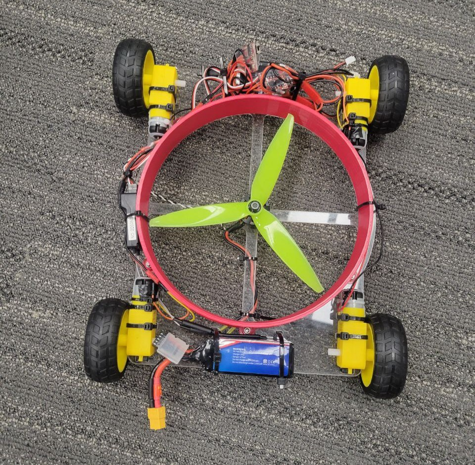
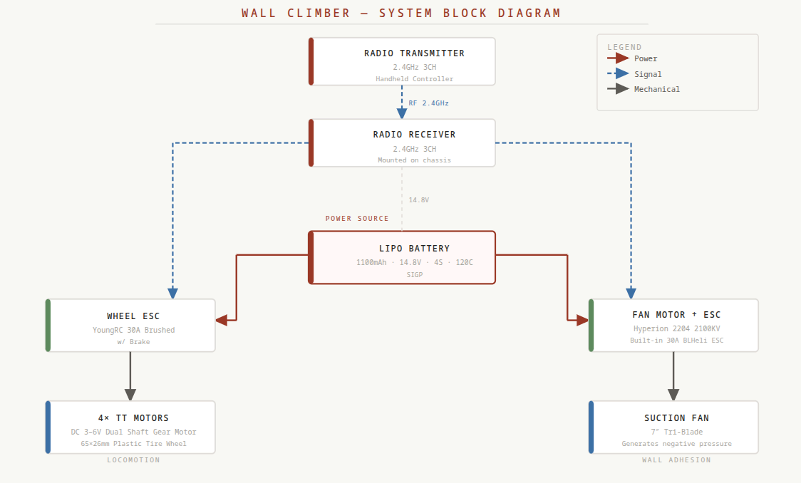
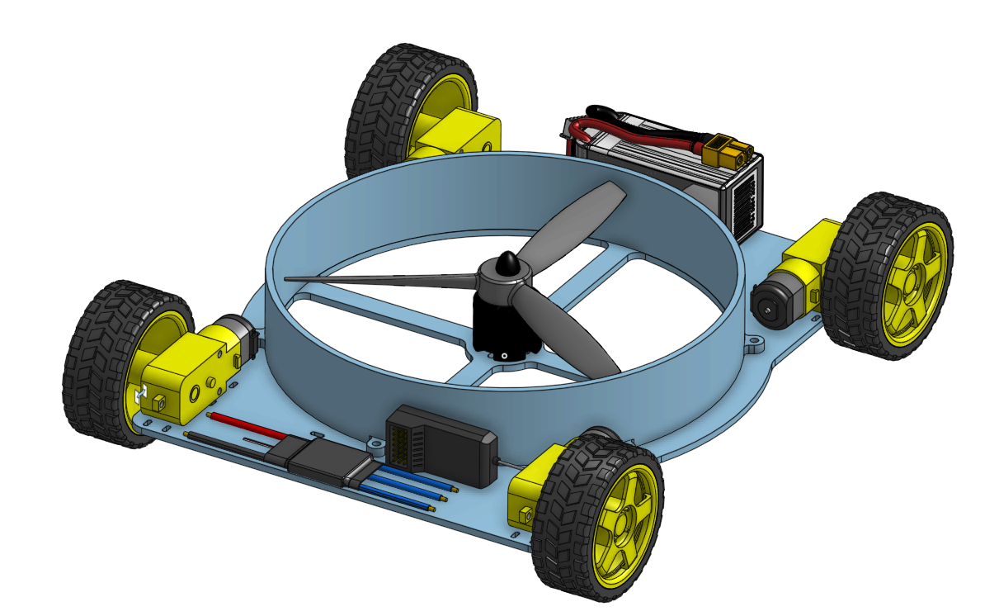

Robotics · Mechanical Design
Overview
The Wall Climber is a remote-controlled robot designed to scale vertical surfaces using a suction-based adhesion system. A 7-inch tri-blade fan driven by a brushless motor generates negative pressure beneath the chassis, pulling the robot firmly against the wall while four TT gear motors drive it in any direction across the surface.
The project spans mechanical design, power systems, and RC integration — from a laser-cut acrylic frame and 3D-printed PLA shroud that channels suction, to a 4S LiPo power system capable of driving both the locomotion and adhesion systems simultaneously.

01 — System Architecture
The diagram below illustrates how power and control signals flow through the robot. The LiPo battery is the single power source for both ESCs. The 2.4GHz receiver independently routes control signals to the wheel ESC (locomotion) and the fan motor ESC (adhesion), giving the operator independent control over drive and suction.

02 — Mechanical
The frame is laser-cut from acrylic sheet, chosen for its rigidity, low weight, and ease of fabrication. The shroud — the sealed enclosure that channels airflow from the fan to create suction against the wall — is 3D printed in PLA. Together they form a compact platform that keeps the center of mass as close to the wall surface as possible to minimize the tipping moment during climbing.

03 — Electrical & Power
The robot is powered by a single 4S LiPo battery delivering 14.8V with a 120C discharge rating — providing ample current headroom for both the brushless fan motor and the four brushed drive motors running simultaneously. Two separate ESCs manage the two subsystems independently, both receiving control signals from the 2.4GHz receiver.
04 — Design Challenges
Vertical locomotion introduces a set of constraints that don't exist for ground robots. Every gram of weight works directly against the adhesion force, so the design required careful balance between suction output and total mass — particularly with a 4S LiPo and brushless motor system adding significant weight.
05 — Demo
Source
CAD files for the 3D-printed PLA shroud and laser-cut acrylic frame are available in the repository.
github.com/rjafari44/wall-climber-robot